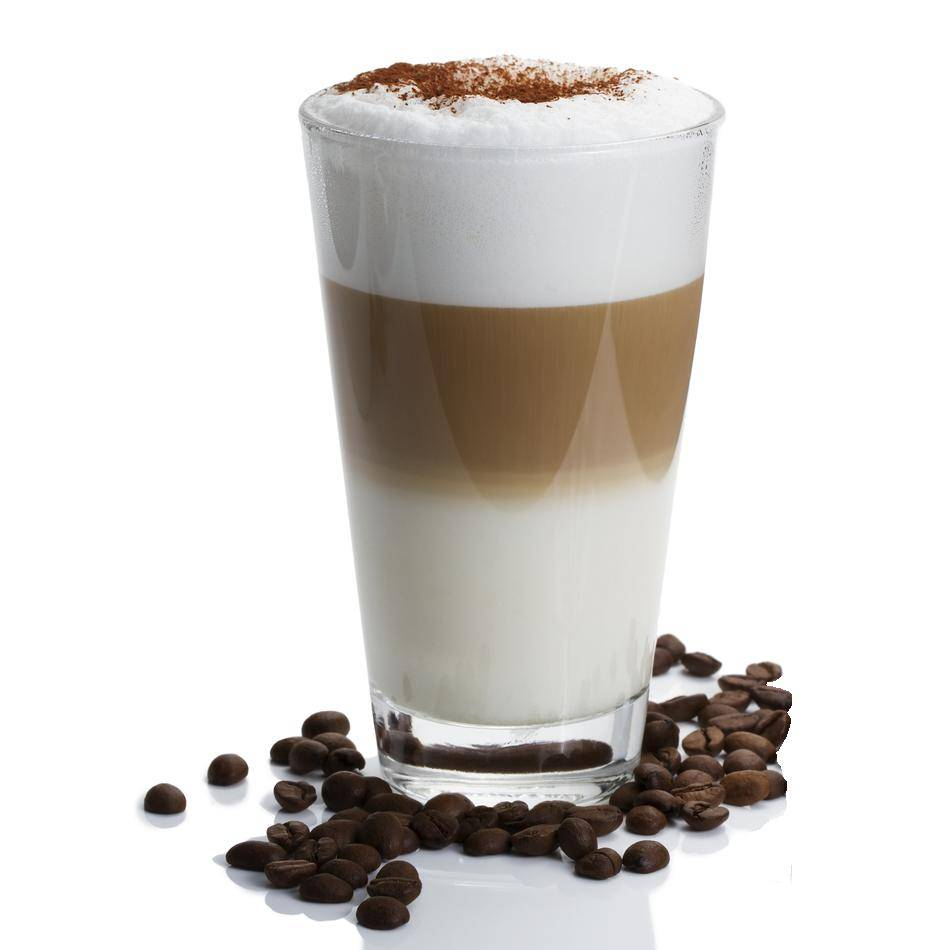

Mochaccino |
HK$ 30 |
| chocolate-flavored variant of a caffè latte. Mochaccino is based on espresso and hot milk, but with added chocolate, typically in the form of sweet cocoa powder, although many varieties use chocolate syrup. Mochas can contain dark or milk chocolate. | |
Latte macchiato |
HK$ 25 |
|  | macchiato features more foam, rather than simply hot milk. A latte macchiato often uses only half an espresso shot or less. Finally, a latte macchiato is often a "layered" drink, rather than being mixed as in a cafe latte. Simply, in a cafe latte, the emphasis is on the coffee, while in a latte macchiato, the emphasis is on the milk. |